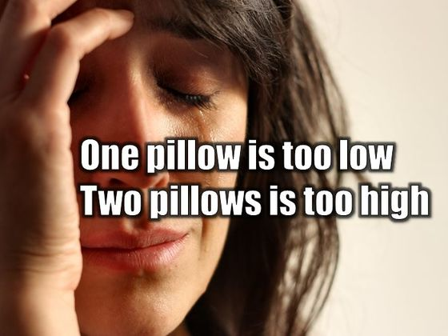

Packages are a robust and convenient way of grouping together R code, documentation and data. There are a number of good reasons for building a package but foremost among those are code reuse and code sharing (which is also an important way to establish a reputation in the R community).
Ever since going overseas, I’ve had to to set up a couple of intercontinental skype calls (record — 4 time zones: US West Coast, US East Coast, London, Singapore! Poor Katie in LA had to wake up at 7am). Flight durations were also difficult to calculate if not specified, as tickets display local time.
I know… 
But BEAR WITH ME as I show you what I’ve done with my classmates Gates and Megan x)